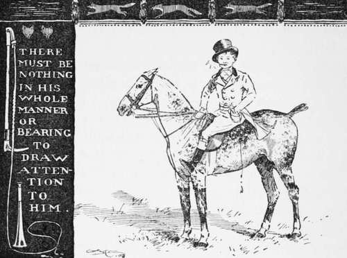

Food, Physic, And Exercise. Continued
Description
This section is from the book "Horses, Guns, And Dogs", by J. Otho Paget, George A. B. Dewar A. B. Portman, And A. Innes Shand. Also available from Amazon: Horses, guns and dogs.
Food, Physic, And Exercise. Continued
Strong tea is another luxury that is responsible for the ruin of nerves, both young and old. Of course every one knows that the man who takes too much wine or spirits is certain to lose his nerve, but boys are seldom guilty of this failing, though they should remember it is a taste that grows with age, and should therefore put the curb on before it takes hold of them. I can't do better than advise you to be moderate in everything.
Forget you are a boy, and remember only that you are the coming man. Young England to-day is the father of England's future. Fresh air and moderate living, with the fair exercise of brain and muscle, will help you to attain a perfect manhood.
There is very little pleasure in owning horses if the control of the stable is in the hands of the groom, and the knowledge you acquire as a boy will help you in later life to rule your establishment. Make your own observations and use common sense. What we call common sense is, in my opinion, the most valuable gift that a horse-owner can have. A slavish adherence to old-fashioned methods is the stumbling - block over which nearly all grooms fall.
We are told, and I have no reason to doubt the accuracy of the statement, that a horse's stomach is very small in comparison with the size of the animal. Now I think this is a fact which we should always keep before us. The first thing it suggests is that food should be supplied in small quantities and at frequent intervals. If a horse will not eat the amount you wish him to have when given four times a day, let the same quantity be divided into six feeds, but never give him more corn than he will finish. There is an idea that horses doing fast work require very little hay, and it may be necessary to limit the amount given to a very gross feeder, but an animal with an average appetite will seldom eat more than is good for him. The rack should be kept filled with fresh hay, and any that is left must be removed. Each grain of oats that comes out of the same stack is practically of equal quality, but with hay this is not the case. If you watch horses grazing in a field you will notice they will pick blades here and there, wandering over the entire field in search of choice bits, though to you all may appear the same.
Now the hay we have stacked ready for use in the stable has come from a similar field, and is generally composed of different grasses, some of which are agreeable to a horse's taste and some not. Then also portions of the stack vary considerably in quality, due either to the process of making or to the weather at the time of stacking, or perhaps to the manure that had been previously applied to the field. A horse should therefore be allowed to select those bits which he prefers in the same manner as when he is at grass, and not be forced to clean up the whole rack. This may appear to you an extravagant method, but, if you want to get the best results from a horse, you must not try to economise with his food. Of course when he is hungry he will eat anything, and the armful of hay which he picked over at first he may eventually consume when there is no prospect of getting anything better, but the question is, will it do him any good ? In racing stables it may be necessary to limit the quantity of hay, but for hunting and ordinary work it is foolish to ruin a horse's constitution in the hope of gaining a little speed. The stomach requires a certain amount of bulky food, and, if nothing but corn is given, the health of the animal must eventually suffer.
Unless a full bucket is always kept in the stable, water should be given before feeding. This is a rule to which there is no exception. The amount of corn given should be regulated by the work the horse does, and there is no doubt that most of the troubles of large stables come from a too full supply of oats with insufficient exercise. Beans should be given sparingly, and not at all to young horses.
This work is not one about fox-hunting, but i cannot get out of my mind that the " sport of kings " is the ultimate end for which you are learning to ride. To my mind, riding along a road is a very tame amusement, and riding to hounds is the greatest pleasure in life. I shall therefore take it for granted that in reading these pages you are seeking for information that will assist you in embarking on the hunting-field.
Continuing the subject of feeding, and the remarks already made on the size of a horse's stomach, I should impress on you that it is the long day without food which makes it impossible to ride a hunter more than twice a week. A horse that is watered and fed at frequent intervals will travel sixty miles a day for a week or more, getting big and strong on the work, of course only at a slow pace, say about six miles an hour. Pace and want of food must eventually wear out the stoutest beast that ever looked through a bridle.
Condition is a very important thing in a hunter, and the muscle that is to carry you through a long run cannot be built up in a day. I am a great advocate for keeping horses in as natural a state as possible, but then we must remember that we ask them to do more than ever would be required of them in their natural wild life. The wild horse in the most favourable country would eventually succumb to one that had been corn fed. What we have to do is to increase the animal's muscular development by judicious exercise, with hard corn, and at the same time to keep his digestive apparatus in working order.
Farmers are, I imagine, the largest class of breeders of hunters or ordinary horses, and with few exceptions they cannot afford to give them corn. The consequence of this is, a young horse straight from their hands hardly knows the taste of oats, and his stomach is therefore not accustomed to such strong food. You buy one of these young horses, and your groom begins immediately to stuff him with a full allowance of old oats. The result of this is humour and several other complaints, because the digestive organs have not been allowed time to accustom themselves to this new food. Nature is a very obliging servant when treated properly, and is often ready to adapt herself to altered conditions, but she will not be hurried. Grooms also forget that young horses, that have never before had physic, do not require such a large dose as old stagers who have been stabled for years.
Unless your groom is very clever and experienced, never allow him to give physic without your order or that of the veterinary surgeons. The latter are much too fond of giving medicine and, like old-fashioned doctors, will prescribe a strong dose before they even know what is the matter. Aloes, I admit, are a very useful purgative, but I am quite certain they weaken the stomach, and the more frequently they are given the more frequently will they be wanted.
A horse in hard work will be all the better for a little alterative medicine once a fortnight, but I know nothing cheaper or better than the old prescription of a teaspoon of sulphur and a tablespoon of saltpetre. A lump of rock-salt in the rack is a good thing.
The question of summering hunters has been frequently debated without any satisfactory conclusion having been reached. I am quite certain that putting a horse into a loose-box and leaving him there without any exercise for two or three months is bad. This plan answers well sometimes, with a plentiful supply of green food and a small allowance of corn, in getting the legs fine—a very desirable end if you are a dealer, but I am supposing that the animal you summer is to do hard work in the winter. The horse that has been walking about all the summer without any weight on his back will be more likely to stand work than one that has spent his time in the stable; the latter may look all right at first, but a few days' hunting will find out his weak spots.
Keeping horses in the stable and giving them regular walking exercise is the only alternative to turning out to grass. I prefer turning out : it is more natural and certainly cheaper. The shoes should be taken off, the feet pared and rasped every three weeks. A big roomy pasture with some shade and a feed of crushed beans twice a day will keep the muscle on. It is all the better if there is not too much grass, as the horse then is kept walking about all day to get his fill, whereas when the grass is too luxurious he soon eats as much as he requires, and will gallop about or get into mischief. Don't run your horses too thickly ; one to every ten acres is sufficient; and let cattle clear up the rest of the herbage. The time when they require a full bite is in the spring when first turned out, and the fresh young grass is then the best natural physic.
Your groom will probably tell you that a horse at grass gallops about and knocks his legs to pieces. You can reply that it is better to find out any weakness in the summer than in the middle of the hunting season, and that, if a horse cannot stand galloping with no weight on his back, he is not likely to carry you to hounds.
The general custom with horses that have been turned out is to give them a dose of physic when they come up. This means at least five days in the stable without exercise, which must be bad for an animal which has been accustomed to walking at least eighteen hours out of the twenty-four. If you are going to physic them, give it out at grass; but I think myself it is quite unnecessary. A horse that has been at grass, and has had no corn, would certainly require some medicine to prepare his stomach for the change of food ; but one that has had beans regularly does not require it. If there is a shed in the field, it is a good plan to put some hay in the rack for the last month ; the horse will eat a little, and it will be preparing him gradually for the coming change.
When you get your hunters up from grass, they should be shod the same day and taken out, being exercised the next. I am afraid you will not get your groom to do it; but horses would be all the better if they were exercised twice a day, and then two hours at a time would be quite sufficient. The danger with riding horses fresh from grass is that their backs are liable to get sore; but by riding and leading them alternately the risk is minimised. A good plan for hardening the back is to wash under the saddle with strong salt and water, directly they come in, whilst the skin is hot.
The mistake that is generally made is treating a horse that has been corn fed at grass as if he had done no work at all, whereas he has probably done more trotting and galloping than one that has been regularly exercised. The consequence is a horse is often less fit after a fortnight in the stable than the day he came out of the field. Some grooms give nothing but walking exercise, and others believe solely in a slow trot; but the best method is a combination of the two, varied by plenty of slow cantering work. The horse that gets his four hours of slow trotting every morning is bored and weary of life before the season commences. Hunters should never be trotted fast, as there is nothing worse for legs and feet. A slow canter and an occasional sharp sprint of two or three furlongs will prepare a horse for anything he will be asked to do in the hunting-field.

Continue to:
- prev: Chapter I. Food, Physic, And Exercise
- Table of Contents
- next: Chapter II. First Riding Lessons And The Hunting Field